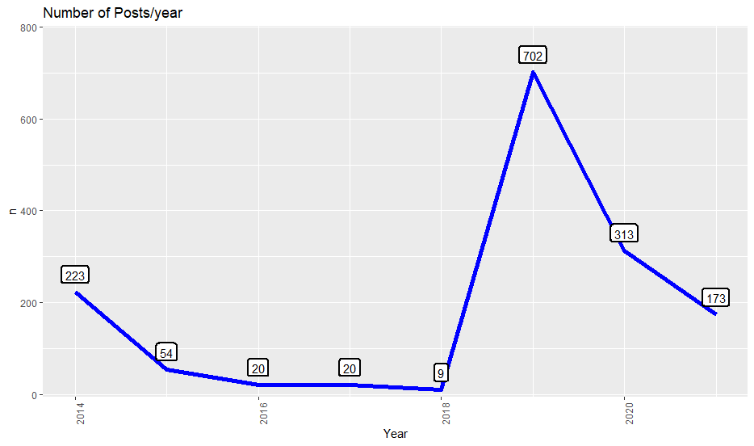
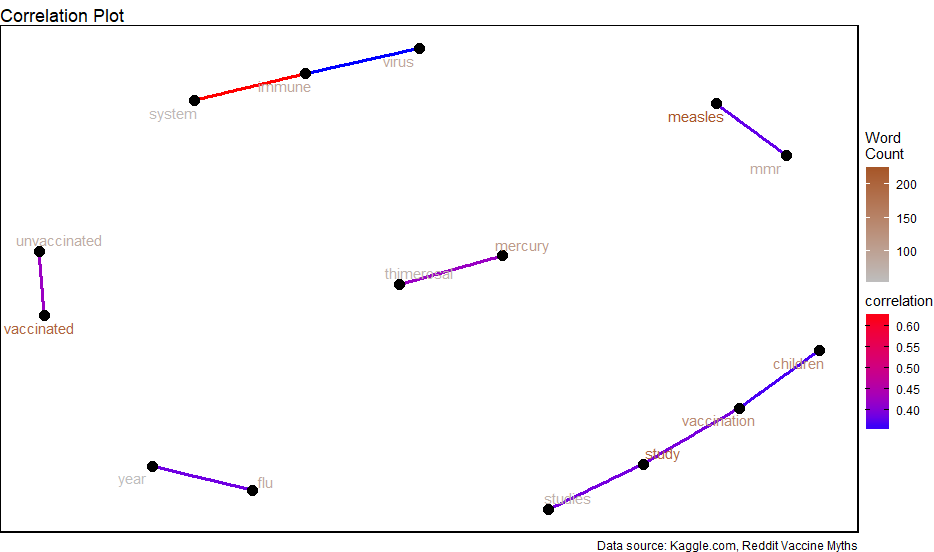
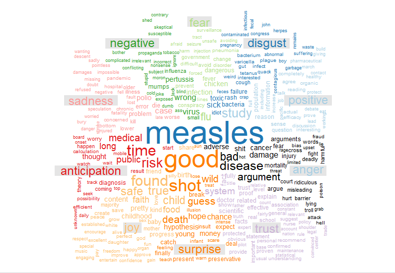
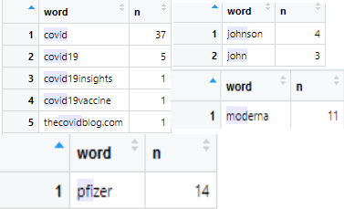

Vaccine Myths Introduction
In the current climate of swift vaccine rollout, there has been a growing trend of people taking to forums to discuss “differing” “scientific” opinions, or to just talk about myths/conspiracies about the nature of vaccines. VaccineMyths (r/VaccineMyths), is a subreddit where people discuss about various Vaccine Myths. As this is a public forum, the data might contain a small percent of harsh language.
This blog will mainly pose to show the growing negative sentiment towards vaccines coming from a large number of forum posts, and how the "subreddit" nature of reddit can breed negative discussion and negative echochambers. We'll take a look at several facets of of the posts, like number of posts/year, language involved in said posts, length of posts, etc to see if this hypothesis has some merit.
Reddit Post Analysis
Now there are many aspects to these reddit posts that we can look at, but first I'd like to briefly go over the data contents. Data contains both posts and comments. Both posts and comments contains the following fields:
- title - relevant for posts
- score - relevant for posts - based on impact, number of comments
- id - unique id for posts/comments
- url - relevant for posts - url of post thread
- commns_num - relevant for post - number of comments to this post
- created - date of creation
- body - relevant for posts/comments - text of the post or comment
- timestamp - timestamp
Now we can see several key things about the data in particular that will be used, primarily we'll be using timestamps, titles, and comments.
Timeline
We see something very interesting from scraping the title count and plotting them against the year. Specifically a major spike in posts in 2019/2020. These spikes can be attributed to two key
worldwide events that occurred. 2019 Measles outbreak and obviously importantly was
Covid. We will discuss the actual contents of these posts later, but establishing a timeline of events is important especially to show
the increased usage of forums to talk about these topics.

Post Word Correlation
Now I can blatantly assert that the two spikes in posts were attributed to those worldwide events, but how do I prove it? Well firstly before talking about the actual "feelings" of any of the posts, let's establish
word patterns, or how do the words in the posts relate to one another, are they all random posts or are there greater themes we can make out to assert this growing trend of vaccine discussion. One of the ways we can do this is by making a correlation plot
or how the words in posts relate to each other.

This analysis in particular is very interesting, we've now extracted themes among the words that are present in the posts and can relate these themes back to anti-vaccination rhetoric and the two worldwide events discussed earlier.
Firstly as the measles outbreak was much more prevalent in the posts it'll be the main focus, we already see this in the "measles-mmr vaccine", we can also see links to mercury and thimerosal two "controversial" vaccine materials that are commonly cited by anti-vaxxers as being dangerous substances, as well as
the "children-study-vaccination" correlation that we have heard far too much about how there are xyz studies that prove vaccinating children causes xyz. My goal with this post is not to discuss the intricacies of anti-vaccination talking points, more to establish a growing sentiment of anti-vaccination as posed in the original hypothesis.
Sentiment Analysis
So now we have some interesting conclusions reached, we have growing posts about vaccines throughout the years and we have theme trails connecting the language in the posts to common anti-vaccination rhetoric. But at the end of the day, does this really matter? Does this inherently mean that their opinions are wrong or negative in any way?
In general, we can't necessarily say that it is, who's to say that one post is negative or positive, it's all relative right? Well data scientists and analysts would whole heartedly disagree. To decipher the meaning or "feeling" behind the words in a piece of text, we commonly consult databases of sentiment. Sentiment databases are a list
of words that have an attached label indicating whether they are positive or negative objectively in the English language. We can use this database in conjunction with our words found earlier and see what kind of labels are placed on the posts.

Ah this graph in particular really sends the message home, we can see overwhelmingly negative sentiments for posts regarding the vaccines in this subreddit. It isn't really comparable how objectively negative the posts are, and this is indicative of the fact that the subreddit is overall negative and breeds negativity. The language and rhetoric is not conducive to "positive" discussion and can really be dangerous to people who are especially not up-to-date in this topic. But you may be asking yourself, blog-man what if the words are just taken out of context? There are plenty of negative words that exist but don't necessarily mean the overall themes are negative. And yes non-descript comment person you are correct, we can not for sure say what words are contributing to the negative sentiment. But there is a method to beautifully show the words that are the most common in posts, and by visualizing it via a word cloud, we can see what I mean by the post content is not randomly "negative"
Word Cloud!
Who doesn't love a good word cloud? Let's see what words are contributing in frequency to the posts.

I don't really have to say much here, the proof is in the pudding.
Smoking Gun, Where is the Covid????
So you've made it this far and my graphs/analysis have been pretty convincing right? But there's been something on your mind as you've made it all the way here, if the data is current and has posts from 2020-2021, why are they mainly focused on the measles outbreak? Should this not be a bigger issue that takes precedence?
Bravo astute reader you've done it again, you make a great point, there should be an overwhelmingly large amount of posts about Covid and the vaccines, so where are they? To answer this question we need to put on our investigation hats, let's look at the subreddit and the dataset to see if we can come to some conclusions.

I took the liberty of embedding some of the highest rated posts on the subreddit so you can have fun looking at them as they are pretty funny, notice anything? Maybe you did maybe you didn't, let's also take a look at the individual data, and see if "covid" or "pfizer/moderna" show up. We see very low counts of some key phrases, so what gives?
As much as I'd like to say that the moderators are evil and there's a conspiracy to remove anti-vaccine rhetoric, but if you look closely at the dates, the posts are simply.... old. As unfun as this answer is, the subreddit is pretty much just dead the dates of the posts in the dataset, and browsing the subreddit for post frequency, agree with this conclusion. It's a time capsule of peak 2019 anti measles vaccine culture and that's about as much as there is to it, plain and simple.
Conclusions
At the end of the day, the content of these posts is definitely interesting to look at, and definitely displays an increasing awareness and realization that anti-vaccine rhetoric is overwhelmingly negative and widespread. The consequences of unchecked discourse like these subreddits may lead to some incredibly false conclusions and borderline radicalization about anti-scientific facts. Though in this particular case, it seems as though the individuals that were a part of this subreddit disbanded, and moved to much more popular subreddits like r/covid, etc to have more focused discussions. Hopefully you enjoyed my analysis and traversing the same thought-structure that I did as I was doing this post, it was a lot of fun to do.